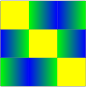

Chapter 3 Repeated Two-Person Zero-sum Games

If we are presented with a two-person zero-sum game we know that our first step is to look for an equilibrium point. If a game has an equilibrium point, then we know that our players should play the corresponding strategy pair. In this case the equilibrium pair and its payoff vector is the “solution” to the game. In this chapter we will explore games that do not necessarily have an equilibrium point. We will also try to determine what a player should do if they play the game repeatedly.